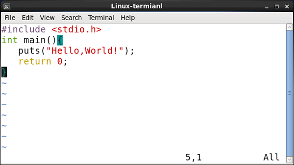
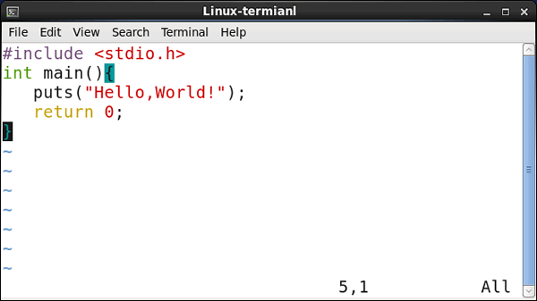

GCC是什么？
对于 GCC 的认知，很多读者还仅停留在“GCC 是一个C语言编译器”的层面，是很片面的。从本节开始，我将带领大家系统学习 GCC，本节先带领大家系统地了解一下 GCC。
谈到 GCC，就不得不提 GNU 计划。GNU 全称 GNU's Not UNIX，又被称为“革奴计划”，由理查德·斯托曼于 1983 年发起。GNU 计划的最终目标是打造出一套完全自由（即自由使用、自由更改、自由发布）、开源的操作系统，并初步将其命名为 GNU 操作系统（其 logo 如图 1 所示）。
图 1 GNU 操作系统的 logo：非洲牛羚
GNU 计划的实施可谓一波三折，最重要的一点是，虽然该计划为 GNU 操作系统量身定做了名为 Thr Hurd 的系统内核，但由于其性能比不上同时期诞生的 Linux 内核，最终 GNU 计划放弃 The Hurd 而选用 Linux 作为 GNU 操作系统的内核。在 Linux 内核的基础上，GNU 计划开发了很多系统部件，GCC 就是其中之一（除此之外，还有 Emacs 等非常实用的软件）。
值得一提的是，原汁原味的 GCC 编译器没有我们熟悉的界面窗口，要想使用它，必须编写对应的 gcc 命令。所谓原汁原味，指的是纯 GCC 编译器和集成了 GCC 编译器的开发软件（IDE），和前者相比，后者在集成 GCC 编译器功能的同时，还向用户提供了友好的界面窗口，使得用户即便记不住 gcc 命令，也能从事开发工作，这极大地降低了用户的学习成本。
在了解什么是 GCC 编译器的基础上，这里以在 CentOS 操作系统（Linux 发行版之一）上使用 gcc 命令运行 C 语言程序为例，让读者更直观的感受一下 GCC 编译器的功能和使用方法。
如下是我们在 vim 编辑器中编写的一段完整的 C 语言程序，其功能是输出一个 "Hello, World!"：

图 1 Linux 系统下编写 C 语言程序
对于此程序，我们可以使用如下的 gcc 命令：
下图演示了如何使用 gcc 命令将 C 语言代码编译成一个可执行文件：

图 2 gcc 命令编译 C 语言程序
如图 2 所示，通过编写对应的 gcc 命令并执行，就可以轻松将我们编写的程序编译成一个二进制可执行文件。
那么，gcc 命令该如何编写呢？别急，下面我将分章节给大家做详细地讲解。
谈到 GCC，就不得不提 GNU 计划。GNU 全称 GNU's Not UNIX，又被称为“革奴计划”，由理查德·斯托曼于 1983 年发起。GNU 计划的最终目标是打造出一套完全自由（即自由使用、自由更改、自由发布）、开源的操作系统，并初步将其命名为 GNU 操作系统（其 logo 如图 1 所示）。
图 1 GNU 操作系统的 logo：非洲牛羚
GNU 计划的实施可谓一波三折，最重要的一点是，虽然该计划为 GNU 操作系统量身定做了名为 Thr Hurd 的系统内核，但由于其性能比不上同时期诞生的 Linux 内核，最终 GNU 计划放弃 The Hurd 而选用 Linux 作为 GNU 操作系统的内核。在 Linux 内核的基础上，GNU 计划开发了很多系统部件，GCC 就是其中之一（除此之外，还有 Emacs 等非常实用的软件）。
早期 GCC 的全拼为 GNU C Compiler，即 GUN 计划诞生的 C 语言编译器，显然最初 GCC 的定位确实只用于编译 C 语言。但经过这些年不断的迭代，GCC 的功能得到了很大的扩展，它不仅可以用来编译 C 语言程序，还可以处理 C++、Go、Objective -C 等多种编译语言编写的程序。与此同时，由于之前的 GNU C Compiler 已经无法完美诠释 GCC 的含义，所以其英文全称被重新定义为 GNU Compiler Collection，即 GNU 编译器套件。由此看来，GNU 计划最终实现了“打造一套自由、开源的操作系统”的初衷，但该操作系统并非完全产自 GNU 计划，因此其被称为 GNU/Linux 操作系统（人们更习惯称为 Linux 操作系统）。注意，开源、自由并不等于免费，有关它们的区别，读者可阅读《开源就等于免费吗？》一文。
GCC 编译器从而停止过改进。截止到今日（2020 年 5 月），GCC 已经从最初的 1.0 版本发展到了 10.1 版本，期间历经了上百个版本的迭代。作为一款最受欢迎的编译器，GCC 被移植到数以千计的硬件/软件平台上，几乎所有的 Linux 发行版也都默认安装有 GCC 编译器。所谓编译器，可以简单地将其理解为“翻译器”。要知道，计算机只认识二进制指令（仅有 0 和 1 组成的指令），我们日常编写的 C 语言代码、C++ 代码、Go 代码等，计算机根本无法识别，只有将程序中的每条语句翻译成对应的二进制指令，计算机才能执行。
| 硬件 | 操作系统 |
|---|---|
| Alpha | Red Hat Linux 7.1 |
| HPPA | HPUX 11.0 |
| Intel x86 | Debian Linux 2.2、Red Hat Linux 6.2 和 FreeBSD 4.5 |
| MIPS | IRIX 6.5 |
| PowerPC | AIX 4.3.3 |
| Sparc | Solaris 2.7 |
值得一提的是，原汁原味的 GCC 编译器没有我们熟悉的界面窗口，要想使用它，必须编写对应的 gcc 命令。所谓原汁原味，指的是纯 GCC 编译器和集成了 GCC 编译器的开发软件（IDE），和前者相比，后者在集成 GCC 编译器功能的同时，还向用户提供了友好的界面窗口，使得用户即便记不住 gcc 命令，也能从事开发工作，这极大地降低了用户的学习成本。
我们知道，操作系统大致分为 2 大阵营，分别是 Windows 阵营和类 Unix 阵营（包括 Unix、Linux、Mac OS、安卓等）。通常情况下，Windows 系统下用户更习惯使用现有的 IDE 来编译程序；而类 Unix 系统下，用户更喜欢直接编写相应的 gcc 命令来编译程序。
在了解什么是 GCC 编译器的基础上，这里以在 CentOS 操作系统（Linux 发行版之一）上使用 gcc 命令运行 C 语言程序为例，让读者更直观的感受一下 GCC 编译器的功能和使用方法。
如下是我们在 vim 编辑器中编写的一段完整的 C 语言程序，其功能是输出一个 "Hello, World!"：

图 1 Linux 系统下编写 C 语言程序
对于此程序，我们可以使用如下的 gcc 命令：
gcc demo.c -o demo.exe
有关 gcc 命令各部分的含义，后续章节会做详细讲解，这里不必深究。
下图演示了如何使用 gcc 命令将 C 语言代码编译成一个可执行文件：
图 2 gcc 命令编译 C 语言程序
如图 2 所示，通过编写对应的 gcc 命令并执行，就可以轻松将我们编写的程序编译成一个二进制可执行文件。
那么，gcc 命令该如何编写呢？别急，下面我将分章节给大家做详细地讲解。
关注公众号「站长严长生」，在手机上阅读所有教程，随时随地都能学习。内含一款搜索神器，免费下载全网书籍和视频。

微信扫码关注公众号